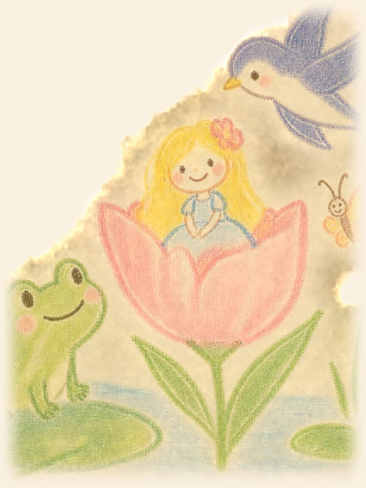
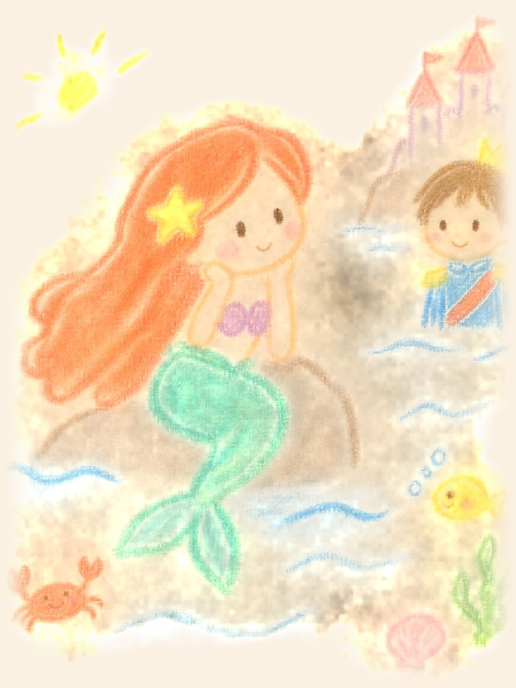
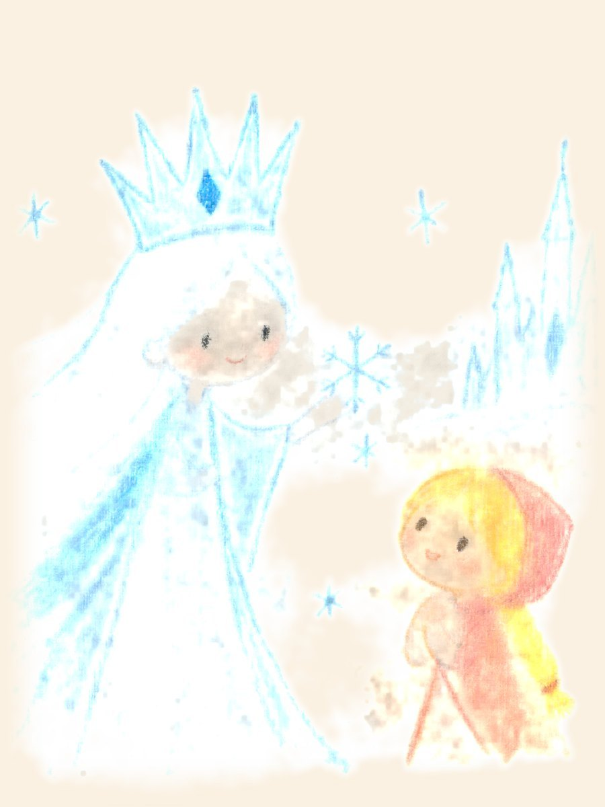
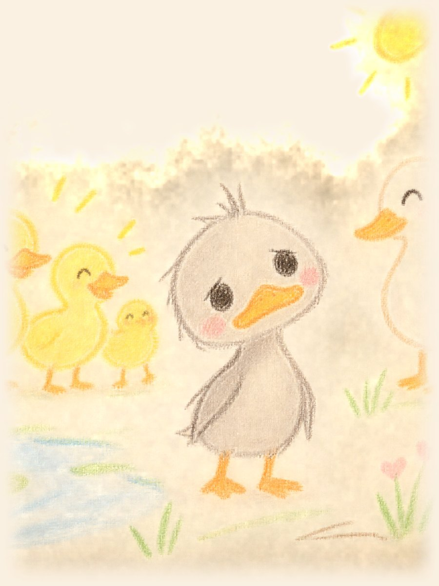

어떤 동화를 읽을까요?
표지를 누르면 바로 책이 펼쳐져요
-
 성냥팔이 소녀
추운 겨울밤, 성냥 불빛 속에서 따뜻한 꿈을 꾸는 소녀 이야기
읽기
성냥팔이 소녀
추운 겨울밤, 성냥 불빛 속에서 따뜻한 꿈을 꾸는 소녀 이야기
읽기
-

엄지 공주 튤립 꽃 속에서 태어난 엄지만 한 아이의 작은 모험 읽기 -

인어 공주 바다 위 세상을 꿈꾼 막내 인어 공주의 이야기 읽기 -

눈의 여왕 얼음 조각에 마음이 얼어 버린 친구를 찾아 떠나는 길 읽기 -

미운 아기 오리 놀림받던 아기 오리가 자라서 알게 된 진짜 모습 읽기
읽고 싶은 동화가 없나요?
달님에게 신청하면 다음 책장에 꽂아 둘게요
동화 신청하기